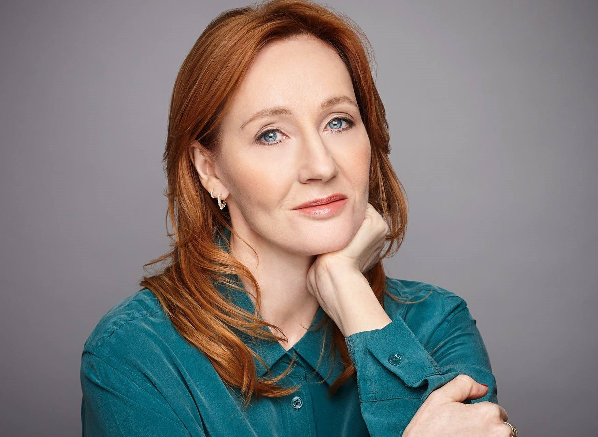

J.K. Rowling
Sobre J.K. Rowling
J. K. Rowling (1965) é uma escritora britânica, autora da série "Harry Potter", que conquistou o público jovem e vendeu milhões de exemplares. J. K. Rowling nasceu em Yate, Inglaterra, no dia 31 de julho de 1965. Filha de Peter James Rowling e de Anne Volant passou sua infância na cidade de Chepstow. Seus pais gostavam de ler e sua casa era repleta de livros. Desde criança queria ser escritora. Escreveu seu primeiro livro de ficção com seis anos de idade: "A História de Um Coelho Chamado Coelho". J. K. Rowling estudou Línguas Clássicas e Literatura Francesa na Universidade de Exeter. Passou um ano na França fazendo curso de especialização. De volta à Inglaterra trabalhou como pesquisadora da Anistia Internacional em Londres.
Harry Potter
Durante uma viagem de trem entre Manchester e King's Cross ela começou a escrever Harry Potter. Ao desembarcar na estação muitos personagens já estavam definidos. Disse ela: "Harry Potter simplesmente entrou na minha cabeça inteiramente formado".Em 1991 deixou o cargo de pesquisadora e foi morar em Porto, Portugal para lecionar inglês, mas não parou de escrever. Frequentava a famosa "Livraria Lello", localizada no centro histórico da cidade, inaugurada em 1906, onde deu continuidade às histórias. A livraria serviu de inspiração para Rowling criar “Floreios e Borrões” o lugar onde os pequenos magos compravam os livros escolares para Hogwarts. Depois de 18 meses, ela conheceu o português Jorge Arantes. Eles se casaram em 16 de outubro de 1992. Em julho de1993 nasceu Jessica. Em novembro o casal se separou. Em dezembro, Rowling e sua filha se mudam para Edimburgo, na Escócia, onde morava sua irmã. Nessa época, sem trabalho, recorreu à ajuda social. Em 1996, o primeiro livro da série “Harry Potter” foi concluído e intitulado “Harry Potter e a Pedra Filosofal”. Depois de ter sido recusado por várias editoras, a obra foi aceita pela editora Bloomsbury e publicado em 26 de junho de 1997. Joanne Rowling, seu nome de nascença, recebeu um "K" de Kathleen, nome de sua avó paterna, assinando suas histórias como J.K. Rowling.